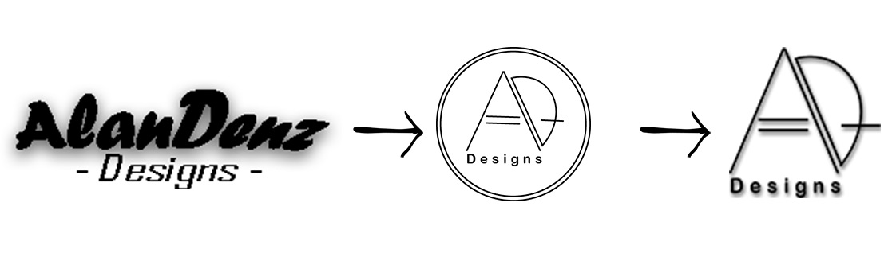

Portfolio documentaiton
The updated version is the very website, that youre currently browsing. I took the constructive feedback i recieved, and in addition did a complete revamp of the site. Now with a better understanding of how things should look with designer goggles, i could with ease figure out what i wanted, and why.
The main changes are the following:
- Color
- • The first version didnt really had a color theme. it was all over the place with different backgrounds. Which made it look very unprofessional, and messy. I decided to go with plain white as the main color theme. Mainly because the color represents cleaniness and simplicity, and in fact it did make it gave the site a more professional look.
- From one-pager to multiple pages
- • As mentioned earlier, i had a bit of a dilemma choosing what type of page i should be using. Now with more content to put in, and most importantly giving my navbar a purpose, i went from the one-pager to multiple pages.
- Logo
- • The logo wasnt mentioned for my initial feedback, although it did quite bothered me. Now with the new color theme, the logo looked out of place, and honestly quite outdated compared to the site's new astethics. Thats why i decided to give it a revamp also! Simple onelined black, with the sites name on it. Went for a more "tech/futuristic" look. Still not fully satisfied with it, eventhough its quite better, than the previous version.

- Functional navbar
- • I had a simple navbar orginially. nothing special visually and hover effects were minimal. Now i added more content for the navbar including a dropdown effect! hovering is smooth and most importantly it is fully functional.